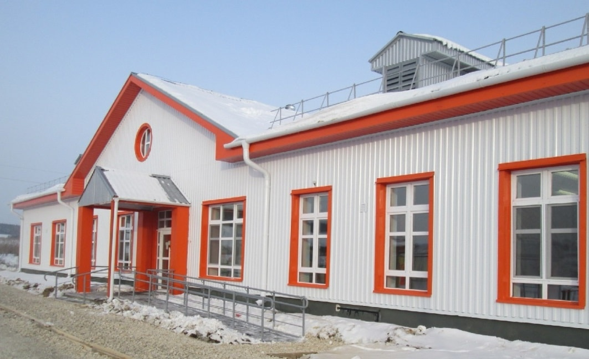
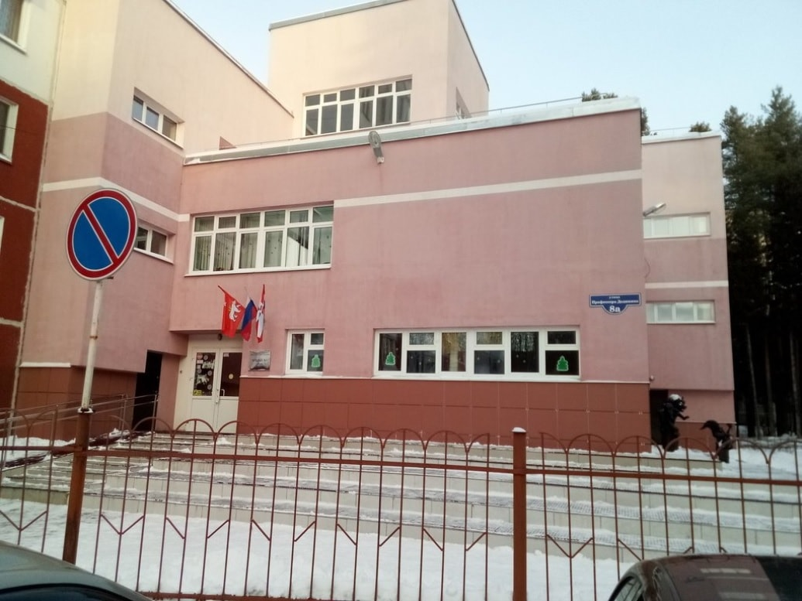
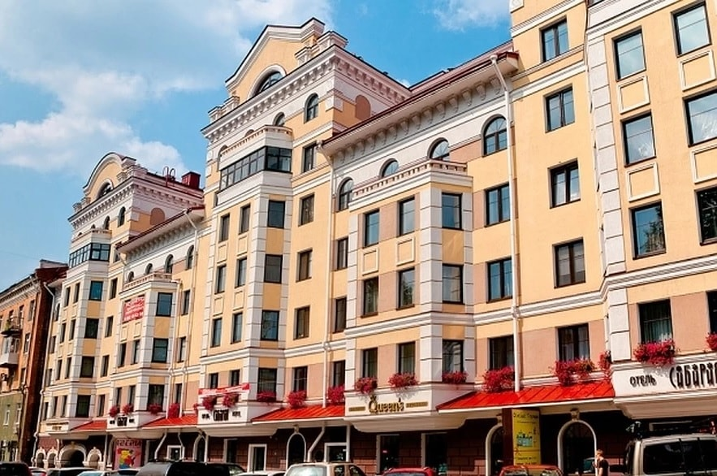
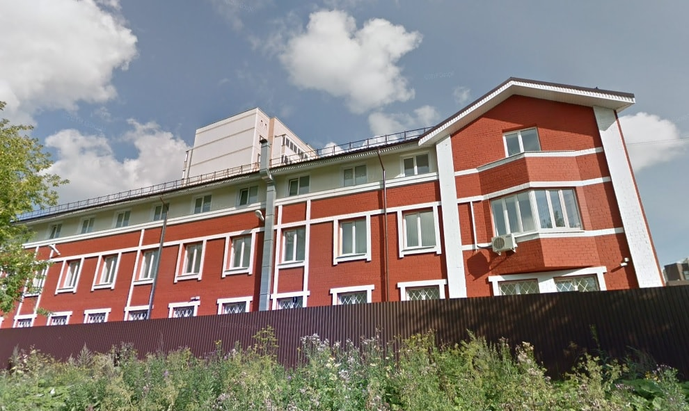
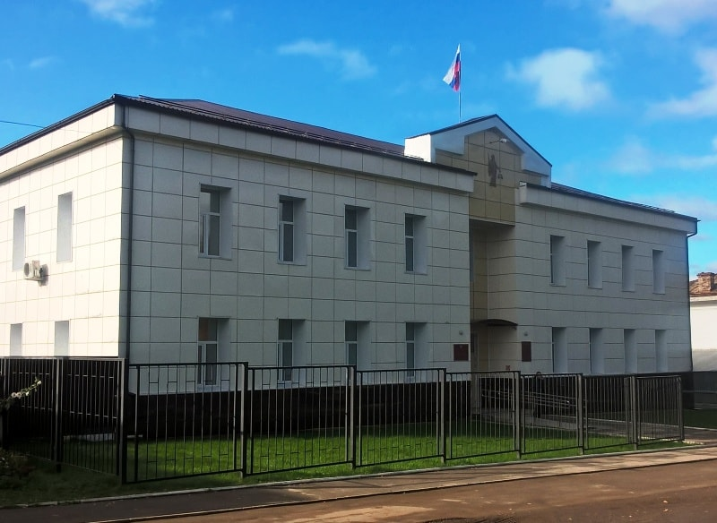
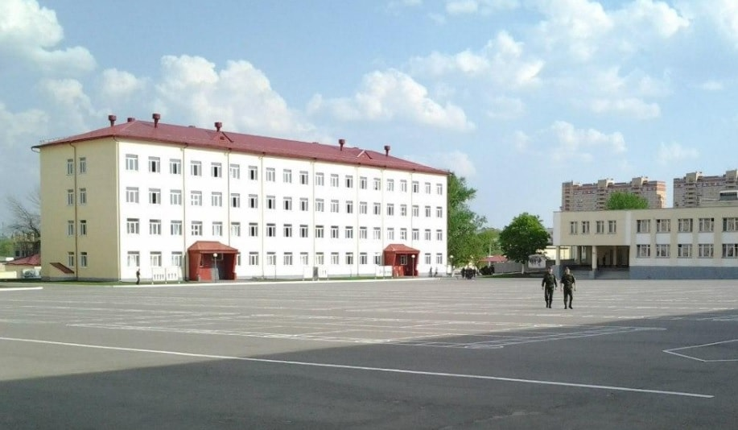
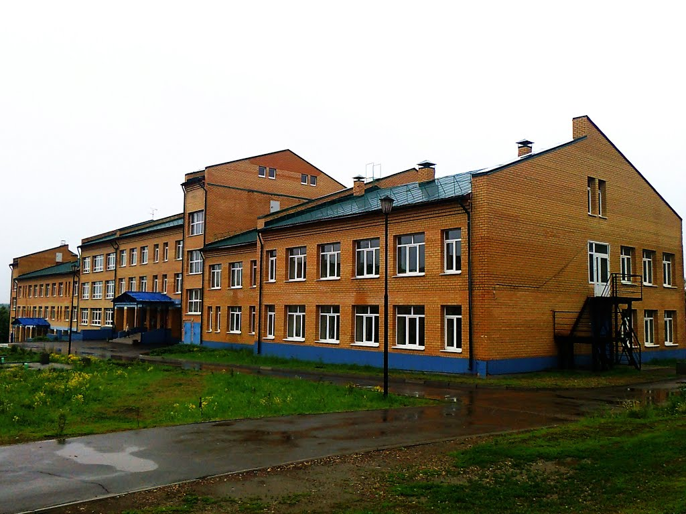
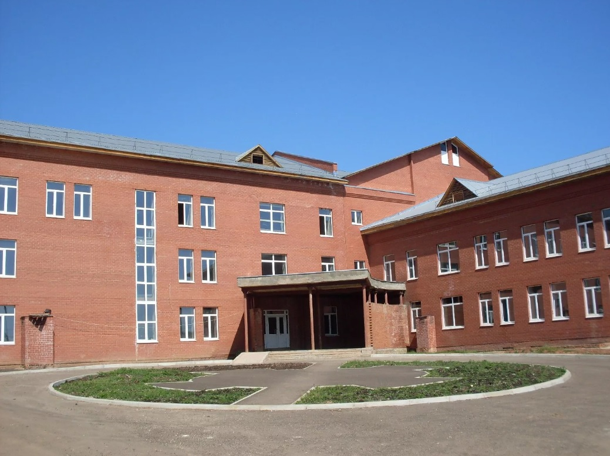
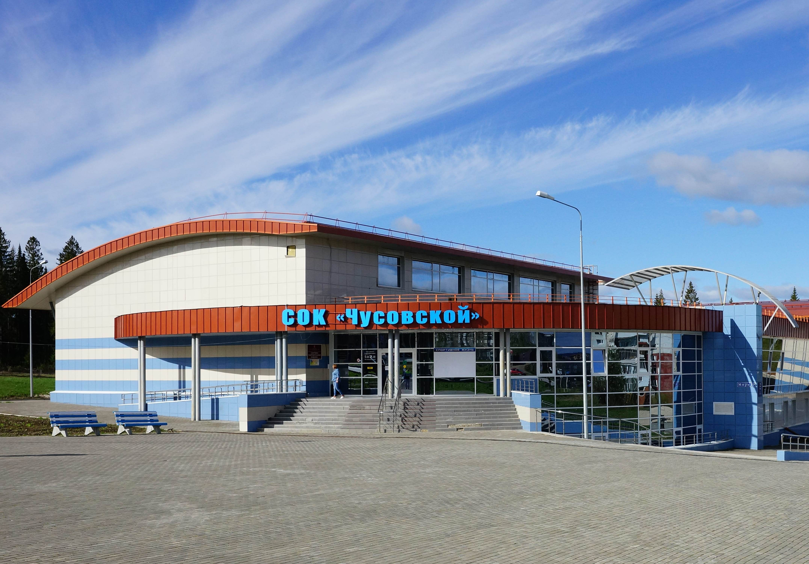
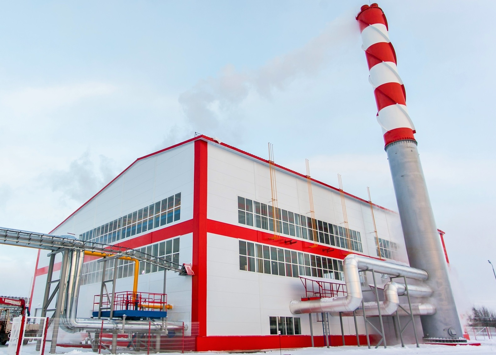

Детский сад в с.Тис Суксунского района
Cтроительство нового детского сада в селе Тис Суксунского района.
Лицей №1 (пр. Дедюкина, 8а)
Капитальный ремонт МОУ Лицей №1 в г. Пермь.
Петропавловская, 29
Строительство 9-ти этажного жилого дома с административными помещениями "Театральный".
г. Екатеринбург, ул.Омская, 108б
Реконструкция здания управления ФСБ России в г. Екатеринбург.
Ильинский районный суд
Комплексный капитальный ремонт здания Ильинского районного суда.
Воинская часть 6659 (с. Гамово)
Реконструкция и капитальный ремонт военного городка ВЧ6659 с. Гамово.
СОШ №1 (г. Кудымкар)
Cтроительство средней общеобразовательной школы №1 на 422 учащихся в г. Кудымкар.
Окружной Кожно-Венерологический Диспансер (г. Кудымкар)
Cтроительство Окружного Кожно-Венерологического Диспансера.
Спортивно-оздоровительный комплекс (г. Чусовой)
Cтроительство СОК в г. Чусовой
Котельная (с. Суда)
Cтроительство новой котельной в с. Суда
Детский сад (с. Уинское)

Cтроительство нового детского сада в с. Уинское
{kind=link}
{kind=link}
{kind=link}
{kind=link}
{kind=link}
{kind=link}
{kind=link}
{kind=link}
{kind=link}
{kind=link}